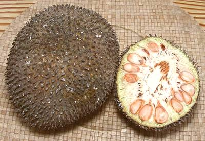
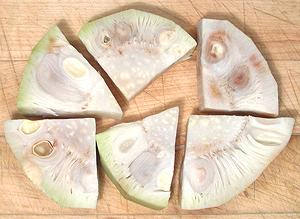

Unripe Jackfruit / "Raw" Jackfruit

[Kathal, Enchor (India); Artocarpus heterophyllus]
Recipes that call for cooking Jackfruit like a vegetable always
presume you know to use Unripe Jackfruit, which is called "Raw
Jackfruit" in most Indian recipes. Many recipes, however, just call
for "Jackfruit" with no explanation. Whole unripe fruit is not
common in North America, but frozen chunks suitable for curry and
the like are fairly available.
Whole fruit, as in the photo to the left, has recently appeared
(spring 2013) in some Indian markets down in Artesia. The cut example
was actually way too mature for recipes. The seeds, though, simmered
for about 15 minutes, were very good, with a lightly nutty flavor
and firm, slightly crunchy texture. The photo specimen was 6-3/4
inches long, 5-1/4 inches diameter and weighed 2 pounds 10 ounces.
More on Mulberries.

Unripe Jackfruit is used mainly for curry type dishes in India and
Southeast Asia.
Buying:
Here in Southern California
you will probably be buying your jackfruit from the frozen food cases
of an Asian market, in which case it will look like the photo to the
left. This is actually the best way for most uses as the product will
be quite uniform with almost no waste. Frozen Jackfruit chunks are most
easily available in Philippine markets, of which we have plenty here in
Los Angeles, because our entire health care system runs on Filipino
immigrants. This product is almost always exported from Thailand.
Prep:
For frozen, just thaw and cut to the desired
size. If you have a whole fresh unripe jackfruit, you'll have to peel
it. First oil your hands and a sharp knife so the latex won't stick.
Carve off the rind, then slice and cut to the size you want.
Cooking:
Most recipes call for simmering cut pieces of
Jackfruit in water for 10 minutes or so to prepare them for recipes, but
longer cooking recipes don't require that.
mb_jackrz 130502 - www.clovegarden.com
©Andrew Grygus - agryg@clovegarden.com - Photos
on this page not otherwise credited © cg1
- Linking to and non-commercial use of this page permitted